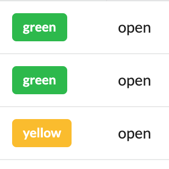
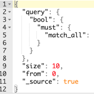
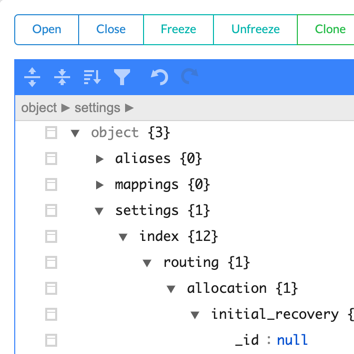

This Elasticsearch GUI client allows you to connect the Elasticsearch server and manage data and configuration. You can install this desktop client on your Mac, Windows or Linux. Elasticsearch client can be used to view and edit mappings, settings, aliases, and indices. You can perform the search operations on your Elasticsearch indices using this desktop client application. The Elasticsearch results can be displayed in different view modes. This desktop client lets you control the Indices, Shards and Allocation stats and configuration. It is possible to import and export data and configuration of Elasticsearch using this desktop client for OSX, Windows and Linux. This is a great alternative to Elasticsearch Plugin Head. In the latest version you can do a profiling of the request. Documents updating and reindexing is available too.
Since version 1.5.0 you have to re-install the application.
If you cannot open the app on MacOS for the first time use Open Anyway security feature in order to open the app to avoid MacOS security warning. This is 100% safe.

The dashboard to display Indices, Shards and Allocation stats and configuration.

Search over indices using body query or uri query parameters. Sorting and pagination is available. Different search results view for hits, aggregations, and raw response.

Manage settings, mappings, aliases, templates and so on. Create, delete and wipe indices.
Elastron updates itself automatically. No need to check for the newer version manually. And it is free!
If you are a dark-side developer, Dark Mode is here for you!
Create data and configuration dumps to a file or the another index and/or server!
Basic version of Elastron for MacOS, Windows, Linux.
Includes all free
features.
We decided that all the PRO features will be free too!